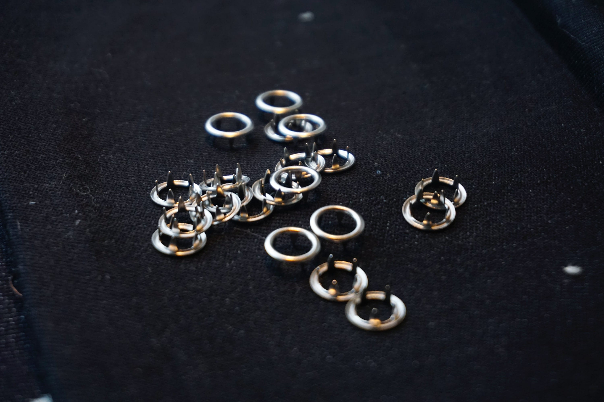

← Computational Craft | Salil Parekh
Teensy LC Soft Breakout Board (Tutorial)
The Teensy LC is an incredible micro-controller for any physical computing project, but it seems especially well suited for soft computer and e-textile projects, given its capabilities. It has 13 analog pins, and 10 PWM pins! The small footprint is a huge advantage. However, the small size can also be a deterrent. The version without headers is difficult to use while testing or debugging, and although it's easy enough to solder to, desoldering is not something you'd want to engage with.
There are breakout boards available, such as this one:
 CZH Labs Terminal Block Breakout Board Module for Teensy LC
CZH Labs Terminal Block Breakout Board Module for Teensy LC
However, it's far too big and paunchy to be used with textiles.
The solution? A soft breakout board!
 Soft breakout board for the Teensy LC (Made entirely with textile scraps!)
Soft breakout board for the Teensy LC (Made entirely with textile scraps!)
This is much easier to use with soft/textile based projects. Although it is larger than the Teensy, perhaps too large, it is easier to connect things to it, both for debugging and production. The each ring corresponds to a pin on the Teensy, with laser etched guides showing the pin numbers. The rings are easy to use with crocodile clips when debugging. Applying copper tape onto the rings and soldering on the tape enables it to be used for projects. Once you're done with the project, simply rip off the copper tape and re-use it for another project!
To make the Teensy LC Soft Breakout Board, first collect the materials and tools needed.
Materials
- Cotton Based Textile (Muslin, Denim)–make sure it contains minimal amounts of polyester)
- Teensy LC (without headers)
- Sewing thread
- Conductive Snaps
- 34 AWG Magnet Wire - Enameled Copper Wire
- Copper Tape (1/4" or 6.35mm)
- Glass Tape (or some sort of insulating tape)
- Sewing Needle
- Playlist of songs to zone out to
If you know of a place which sells or gives away textile scraps, definitely pay them a visit. It's always good to reuse waste material and the variety of materials and colours will help make your breakout board even better. I visited a place called FabScrap and found a box of donated materials for this project. I got all the materials except for the Copper Tape, Copper Wire, and the Teensy LC from these places.
 Box of scrap material
Box of scrap material
Tools
- Soldering Iron + Solder
- Nose Pliers (thin pliers of some sort)
- Scissors
- Access to a laser cutter
- Ruler
Although it helps immensely to have access to a laser cutter, you can also achieve similar results with a stencil and pair of scissors as we only need to cut one big shape. The etched markings can be easily replicated with a pencil or some chalk.
Step 1
Gather all materials and take stock. You may not find exactly what I find, due to the nature of foraging from scraps, so just make sure you have 2-3 piece of fabric about 22x10cm in size, and around 40 conductive snaps, patches or little clasps. Use your multimeter to test the conductivity of these snaps but using the continuity mode.
 Snaps used for this project
Step 2
Download this PDF file, which contains laser cutting plans. These can also be printed on normal copier paper and used as stencils to manually cut out the shapes on fabric. The thin blue line in the file indicates the 'cut' layer, and the filled shapes indicate the 'engraving/etching' layer. If you can, cut an extra or two. If you're cutting it by hand, roughly mark out the positions for the snaps using a temporary marker of some sort on the fabric. Try to be precise, but don't worry if it's not an exact replica–just make there's enough spacing between the snap positions.
 Stencil for breakout board
Stencil for breakout board
You should end up with something like this:
 I used denim, which is cotton based (hence laser cutter friendly) and slighly thicker which provides some rigidity
I used denim, which is cotton based (hence laser cutter friendly) and slighly thicker which provides some rigidity
Step 3
If you end up using snaps like I did, insert them onto the marked spots and let the spikes push through the fabric. Once it's in, use a pair of nose pliers to twist the spikes inward and press them in to secure the snaps on the fabric.

Do this for all snaps. The instructions call for 40, but we only need 36. Always good to have extras if something goes wrong! By the end of it, you should have something pretty like this!

Step 4.1
The 34 AWG Magnet Wire is tough to work with, but its characteristics make it perfect for this project. The copper wire is coated with enamel, so its effectively insulated. This make it useful when there are lots of intersecting wires and we don't want them to connect with each other. The enamel insulation can be removed with sandpaper, or by very quickly running a flame across it.

I used another method which worked far more consistently. I melted some solder wire on to a working surface (this is very hot, so it will burn a wood) to create a small ball of solder. I took the end of the magnet wire I wanted to strip, and inserted it into the ball of solder while keeping the soldering iron on the little ball. The hot, liquid ball of solder melted the enamel from the wire, and at the same time, coated it in tin-which really handy for soldering it to something else. This method is certainly tricker, and may probably damage the surface you're working on, but the results are excellent. The magnet wire is stripped well, and at the same time is easier to solder onto other surface due to being tinned.
I'd suggest doing a few trials with the wire to get a hang of stripping the wire using any method you find comfortable. Practice at least 4-5 times if you can.
To test if you've done it successfully, connect your multimeter on continuity mode and check if the stripped parts of the wire are conductive.
Step 4.2
Now that you've gotten a little more comfortable with the wire, we will start connecting the snaps to the pins on the Teensy. This where it starts to get tricky, so full concentration here.
Place the Teensy on the rectangular etching on the fabric. Pick any one pin, let's say Pin 8. Take the wire, measure the distance between Pin 8 on the Teensy and the snap alongside the number '8' etching. Now cut a wire of about 1.5 times the length measured. Strip about 5mm of one end of the wire, and then strip the same amount part somewhere in the middle such that the distance between the two stripped ends is ever so slightly longer (2mm or so) than the distance between the pin and the snap.
Use the multimeter to check your work by inspecting if the stripped bits are conductive. Check once, check twice, check thrice!
Step 4.3
Fire up your soldering iron, if you haven't already, and have some solder wire handy. We'll be connecting one stripped end of the wire from before to the snap.
Flip the fabric over, and apply a small blob of solder to one of the flattened spikes of the selected snap. The snap will be hot so be careful when handling the material! Now take the stripped wire and place it on the blob, then apply the soldering iron on top of that. As the iron heats and melts the solder blob, it will smoothly accept the end of the wire and voila–you've connected the wire to the snap. Check the if the stripped bit in the middle is connected to the snap.
Remember, ABCC: Always Be Checking for Conductivity

Step 4.4
Place the Teensy on the correct spot, and hold it down with a bit of masking tape to keep it in position temporarily.
Thread the wire you connected to the snap through a sewing needle and pierce the base fabric from just below the pin slot (Pin 8 in this instance) and push through. The needle just go through pin 8 and drag along the wire along with it.
Now that you've threaded the wire through the pin hole of the Teensy, position the wire such that the stripped section is making contact with the inside cylinder of the pin. Bend the wire with your finger such that the contact is firm and the wire holds position.
Get your solder and soldering iron and very gently solder the magnet wire to the Teensy pin.
Now, check the conductiviy between the pin and the snap. ABCC.

If it fails the conductivity test, press down the hot soldering iron vertically (90°) and pull the wire horizontally so that the contact between the pin and the wire is firmer.
Snip off the extra wire protuding from the pin once you're sure of the conductivity.
Now repeat steps 4.2 to 4.4 for all pins! As you go pin by pin, make sure you check that the pins are indeed well connected to the snaps. Also, do check if the snaps connect to each other–this should not happen! If that occurs, check the wiring and make sure that the stripped sections aren't intersecting with each other. If that does happen, put a small section of the glass tape on between the intersections to stop the shorting. This is where you get to use that playlist of songs to zone out to as you go about connecting the pins to the snaps.
You'll find that as you connect more pins, the Teensy won't need to be held down with tape anymore, although keep it taped down as you work just to make sure there's no unnecessary movement.
 All snaps are wired up
All snaps are wired up
Step 5
Now that all snaps are connected to their respective pins, tape down all points at which the wires connect to the pins and the snaps with insulating glass tape. This not only helps ensure that none of the wires snap off (this wire is thin and light, but also a little fragile) but also adds some rigidity the base fabric on which the Teensy is mounted.
To add more protection and to hide the tape, cut another shape (also provided in the PDF) from either the same piece of fabric or a different one if you want to add some visual flair and stitch to the back. You can use a running stitch along the edges for a more secure fit, or just stitch the corners to enable easy access to the wiring in case anything goes wrong.

Bonus: Step 6
This isn't necessary, but this does showcase an additional feature of this design. The Teensy is pushed to one side of the board to make space for a battery to be mounted directly to the soft breakout board. I'm using a 3.7 420mAh LiPo battery for my purposes, so I soldered a JST connecter on to some copper tape in that empty space, which was connected to the 5VIN and GND pins with the magnet wire. I can hook up my battery to the connector. If you wish to use another sort of battery, such as a coin cell holder+coin cell, or anything else, use that empty space to either tape it down, or sew it for a cleaner look–the choice is yours, use the space as you wish!

Usage Instructions
For debugging, attach crocodile clips to the snaps and connect peripherals. Once you're ready to use the board for a project in a production setting, apply copper tape across the snaps and solder wiring onto the tape. Once the project is over, simply rip off the copper tape and you can use it again!
Example
Here's me using my breakout board for a curtain project I'm working on. This is the first time I used my breakout board, so it's a little rough around the edges, but I definitely appreciated having the breakout board around while building the curtain and it was simple to solder my wiring to it.
 Teensy LC Soft Breakout Board used in curtain
Teensy LC Soft Breakout Board used in curtain
Previous post: Do Curtains Dream at Night? + Teensy Soft Breakout Board